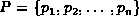
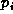
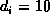
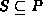
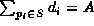
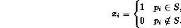
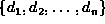
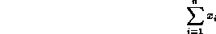
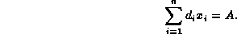

Data Structures and Algorithms
with Object-Oriented Design Patterns in Java
Data Structures and Algorithms
with Object-Oriented Design Patterns in JavaConsider the problem a cashier solves every time she counts out some amount of currency. The cashier has at her disposal a collection of notes and coins of various denominations and is required to count out a specified sum using the smallest possible number of pieces.
The problem can be expressed mathematically as follows: Let there be n pieces of money (notes or coins), , and let be the denomination of . For example, if is a dime, then . To count out a given sum of money A we find the smallest subset of P, say , such that .
One way to represent the subset S is to use n variables
 , such that
, such that

Given  our objective is to minimize

subject to the constraint

 Copyright © 1998 by Bruno R. Preiss, P.Eng. All rights reserved.
Copyright © 1998 by Bruno R. Preiss, P.Eng. All rights reserved.